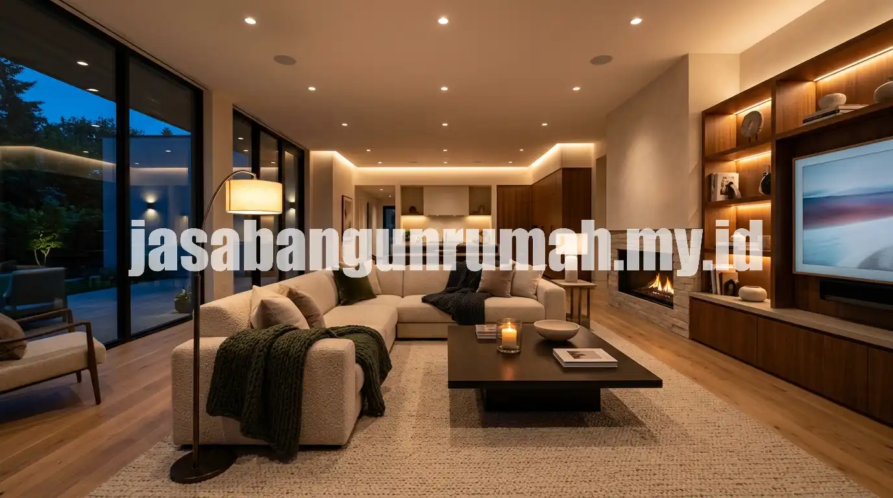

Daftar Isi
- Palet Warna Netral Hangat Menggantikan Warna Monokrom Dingin
- Material Alami seperti Kayu, Rotan, dan Batu Alam
- Pencahayaan Ambient Berlapis untuk Kesan Dramatis
- Furnitur Multifungsi untuk Ruangan Terbatas
- Elemen Lengkung sebagai Aksen Modern
- Void dan Bukaan Vertikal untuk Ilusi Ruang Lebih Luas
- Sentuhan Personal Melalui Galeri Foto dan Karya Seni
Tren desain interior rumah mewah 2026 mengarah pada palet warna netral hangat, material alami, pencahayaan ambient berlapis, dan furnitur multifungsi yang membuat ruangan terasa lebih lapang meski ukurannya terbatas.
Palet Warna Netral Hangat Menggantikan Warna Monokrom Dingin
Warna netral hangat seperti krem, taupe, dan cokelat susu mulai menggeser dominasi putih dan abu-abu dingin yang populer pada tahun-tahun sebelumnya, karena dinilai memberi kesan lebih nyaman dan mewah tanpa terlihat kaku.
Penerapan warna ini biasanya dikombinasikan dengan aksen material kayu pada furnitur atau elemen dinding, sehingga ruangan terasa lebih hangat sekaligus tetap terlihat bersih dan modern. Kombinasi warna netral hangat juga lebih fleksibel dipadukan dengan berbagai gaya furnitur, baik yang bercorak minimalis maupun sedikit klasik kontemporer.
Material Alami seperti Kayu, Rotan, dan Batu Alam
Material alami kembali menjadi favorit dalam desain interior 2026, terutama kayu solid pada lantai atau furnitur, rotan pada kursi dan lampu gantung, serta batu alam pada dinding aksen area tertentu seperti kitchen island atau kamar mandi.
Penggunaan material alami memberi tekstur visual yang lebih kaya dibandingkan permukaan polos, sekaligus menghadirkan kesan hangat dan organik pada ruangan bergaya modern. Material ini juga cenderung lebih tahan lama jika dirawat dengan benar, sehingga menjadi investasi jangka panjang meski harga awalnya sering lebih tinggi dibandingkan material sintetis.
Pencahayaan Ambient Berlapis untuk Kesan Dramatis
Pencahayaan ambient berlapis menggabungkan beberapa sumber cahaya dengan intensitas berbeda, seperti lampu utama di plafon, lampu sorot pada area tertentu, dan lampu meja atau lantai untuk menciptakan suasana lebih hangat pada malam hari.
Teknik ini berbeda dari pencahayaan konvensional yang hanya mengandalkan satu titik lampu utama di tengah ruangan, karena pencahayaan berlapis mampu menonjolkan tekstur material dan menciptakan kedalaman visual pada ruangan. Penataan pencahayaan seperti ini umumnya direncanakan sejak tahap desain interior awal agar posisi titik lampu sesuai dengan tata letak furnitur.

Furnitur Multifungsi untuk Ruangan Terbatas
Furnitur multifungsi seperti sofa bed, meja lipat, atau lemari built-in dengan penyimpanan tersembunyi semakin diminati seiring meningkatnya kebutuhan akan ruang yang efisien pada rumah tipe kecil hingga menengah.
Konsep ini memungkinkan satu ruangan memiliki lebih dari satu fungsi tanpa terlihat penuh sesak, misalnya ruang kerja yang dapat berubah menjadi ruang tamu tambahan saat ada tamu menginap. Pemilihan furnitur multifungsi sebaiknya disesuaikan dengan kebutuhan harian penghuni agar benar-benar terpakai secara optimal, bukan sekadar mengikuti tren tanpa mempertimbangkan fungsi jangka panjang.
Elemen Lengkung sebagai Aksen Modern
Elemen lengkung pada lengkungan pintu, cermin, atau sandaran sofa menjadi salah satu ciri khas interior 2026 yang memberi kesan lebih lembut dibandingkan garis tegas khas gaya minimalis sebelumnya.
Aksen lengkung ini biasanya diterapkan secara terbatas pada satu atau dua elemen saja agar tidak mendominasi ruangan, misalnya pada bingkai cermin di ruang tamu atau kepala tempat tidur di kamar utama. Kombinasi antara garis tegas pada furnitur utama dan aksen lengkung pada detail kecil menciptakan keseimbangan visual yang dianggap lebih dinamis.
Void dan Bukaan Vertikal untuk Ilusi Ruang Lebih Luas
Void atau bukaan vertikal antar lantai semakin banyak diterapkan pada rumah dua lantai untuk menciptakan ilusi ruang yang lebih luas, sekaligus membantu sirkulasi udara dan cahaya alami masuk lebih maksimal ke bagian dalam rumah.
Penerapan void biasanya dikombinasikan dengan tangga terbuka atau railing kaca agar pandangan antar lantai tidak terhalang secara visual. Selain aspek estetika, void juga membantu mengurangi kelembapan pada rumah dengan ventilasi terbatas karena udara dapat bersirkulasi lebih lancar antar lantai.
Sentuhan Personal Melalui Galeri Foto dan Karya Seni
Tren interior 2026 juga menekankan sentuhan personal pada ruangan melalui galeri foto keluarga, karya seni lokal, atau koleksi pribadi yang ditata secara estetik di dinding ruang tamu maupun lorong rumah.
Elemen personal ini dianggap penting untuk menghindari kesan rumah yang terlalu steril seperti ruang pamer, sekaligus mencerminkan karakter penghuni yang tinggal di dalamnya. Penataan galeri sebaiknya tetap memperhatikan komposisi warna dan ukuran bingkai agar terlihat rapi, bukan sekadar menempel banyak foto tanpa perencanaan tata letak. Bagi pemilik rumah yang ingin mewujudkan tren ini secara menyeluruh dengan bantuan profesional, dapat baca panduan edukasi tren desain interior atau langsung berkonsultasi melalui layanan arsitek rumah profesional untuk menyesuaikan konsep dengan kondisi ruangan yang ada.